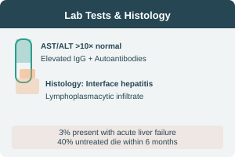

AIH — Laboratory & Histology
Laboratory Investigations
- Marked AST/ALT elevation >10× normal
- Elevated serum IgG & gamma globulins
- Positive autoantibodies (ANA, ASMA, anti-LKM)
- Rule out viral hepatitis (A–E)
- Rule out metabolic (NASH, Wilson, Hemochromatosis, α1-AT deficiency)
- Rule out drug-induced hepatitis
- 3% present with acute liver failure
- 40% untreated die within 6 months
Histologic Findings
- Interface hepatitis — hallmark lesion
- Lymphoplasmacytic infiltrate in portal tracts
- Piecemeal necrosis
- May show bridging necrosis or cirrhosis
Differential Diagnosis
- Viral hepatitis (A–E, EBV, CMV)
- Metabolic: NASH, Wilson, Hemochromatosis, α1-AT
- Toxin/Drug-induced hepatitis
- PSC & PBC
Simplified Diagnostic Criteria for AIH
Combines autoantibody titers, IgG level, histology, and exclusion of viral hepatitis — used for scoring probability of AIH.
